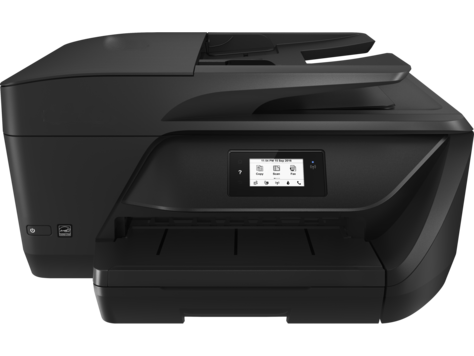

HP OFFICEJET PRO 6958 PRINTER SETUP AND INSTALL
The HP OfficeJet Pro perfectly suits for business and for the all the home purposes. It produces professional quality prints at less cost. Its printing speed is so impressive that it, helps you handle the projects without slowing down. Optional high-yield cartridges give a better value for continuous printing for more time.
Features
- It supports borderless printing and can print up to 8.5 x 11 in, 216 x 279 mm.
- You can connect a tablet or smartphone directly to the 123.hp.com/ojpro6958 printer and easily print without a network.
- You can quickly copy, scan, and fax multipage documents with the 35-page automatic document feeder.
- It supports USB and wireless capability, and also it supports automatic and manual duplexing in printing.
- It supports mobile printing services like ePrint, AirPrint, wireless direct printing and single-sided Duplex ADF scanning.

HP OFFICEJET PRO 6958 PRINTER SOFTWARE AND DRIVERS DOWNLOAD
You can quickly download and install the latest version software and driver for Mac from our website through Apple software update. Also, you can download the software from the installation CD if it includes the driver for your windows and follows the steps accordingly to complete the driver and software installation.
Step 1: You can download the software and driver from our website easily. Click the below-given link to download the latest driver and software.
Step 2: When you click the link, you will be automatically directed to the driver download and there you need to select the “download” option.
Step 3: Once you click the “download” option, the driver will start downloading. Then you will be directed to the set of instructions.
Step 4: Then select the “Open”, “Save”, or “Run” option in any windows that display to download the driver to your computer and you need to select the format.
Step 5: Based on the Windows or Mac, you need to select the format to save as .exe for windows and .dmg for Mac and the file gets saved.
Step 6: Now, open the “browser downloads bar” or ” Downloads folder” on the computer and double-click the driver file in it, to launch driver installation.
Step 7: Follow the instructions displayed on the screen to complete the setup and also do the on-screen instructions to complete the driver and software installation.
Step 8: After completing the driver installation, go back to the beginning of the webpage in your browser to quickly finish the 123.hp.com/ojp6958 printer registration and activation.
Install Using CD/DVD:
Step 1: You can download the driver and software from the CD or DVD that came along with the printer. First, put the CD into CD drive.
Step 2: Then follow the instructions displayed on the screen to download and install the driver and software using the CD. Finally, the driver gets installed.
HP OFFICEJET PRO 6958 PRINTER MOBILE PRINTING
123 HP OJPRO 6958 EPRINT
- Step 1: Print a document or photo saved on your mobile device, by opening the app that has the document or photo that you want to print.
- Step 2: Touch “action” or “share” icon and open the email app, from where you want to print and type your printer’s email address in the To: field.
- Step 3: Type the email subject line and tap “send”. Now, open the email you need to print, and select “Forward” and then type your printer’s email address.
- Step 4: Then enter the subject in the email subject line and touch the “send” option. You can also print a webpage from your tablet or smartphone.
- Step 5: Open the webpage you need to print. Save it as a document and then email it as an attachment and print the webpage from there.
123 HP OJPRO 6958 AIRPRINT
- Step 1: Before you start printing, ensure the printer and Apple iOS device are connected, either through a Wi-Fi Direct/HP wireless direct or through a wireless network.
- Step 2: Turn the 123.hp.com/ojpro6958 printer on and open the document, photo, email, or webpage you need to print and touch the “Action icon” to show menu options.
- Step 3: Depending on the type of file you need to print, click “print” or the “print icon”. Then, touch “Select Printer” on the Printer Options menu.
- Step 4: Choose the “Options” to change other settings if necessary. Certain options, like paper size, might not be adjustable and have to be changed from the printer.
- Step 5: The “Options” menu will not appear if your printer is black ink only. Choose the number of copies you need to print, and then tap “Print”.
123 HP OJPRO 6958 WIRELESS DIRECT PRINTING
- STEP 1: First, set up your printer and do not install the HP printer software. Then turn on your printer’s wireless direct connection.
- STEP 2: Now, press the Wireless button from the home screen and then click “Settings”. Check if the wireless direct is off.
- STEP 3: If the Wireless Direct is Off, choose the “Wireless Direct” option and then choose On (No Security) or On (With Security).
- STEP 4: Now, turn on your computer’s Wi-Fi and connect to the wireless direct name from your computer. Then install the software.
- STEP 5: Select “Wireless” on the Connection Options software screen. Finish installing by selecting your 123.hp.com/ojpro6958 printer. Then select “print” and document prints.
HP Envy 6255 Scan Setup
- To perform scanning, set up your printer and make sure the corresponding driver software is installed. It is recommended to download the full-feature software.
- Manually clean the scanner glass as dirt particles can cause a drop in scan quality. Place the document to be scanned face down and properly aligned to the markings provided in the side.
- Scan settings can be found in the software on the computer which is used to operate the printer. You can manipulate the scanned documents and choose the location the file has to be saved.
- There is also the option of the scanned document is directly emailed to an address of your choosing.
- HP Scan software can be used to assist with setting up the process in case you run into issue whilst setting up.
HP Envy 6255 Scan Issues
- Scanner issues are various in nature. USB scanner error, network scan error, delayed scanning, unable to manage scanned files are some of the errors faced.
- ADF not working on scanner issue can be fixed by cleaning the rollers that are present in the ADF. Due to dirt accumulation, more than one paper will be picked up by the ADF.
- Restarting the printer should be able to fix most of the issues. This is done by removing the power cord when the 123.hp.com/ojpro6958 printer is turned on. Reconnect after a period of 60 seconds and try scanning.
- Check your connectivity. Make sure the printer is connected to your network at all times.
- Run HP Print and Scan Doctor. This is a diagnostic tool that helps in identifying and offering troubleshooting tips
HP OJP6958 PRINT DOCUMENT
- Step 1: Make sure your Android device and the printer are connected to the same wireless network. Install the “HP Print Service Plugin” from the Google Play Store.
- Step 2: After installation, the HP Print Service Plugin will turn on automatically for the Android devices. You can now print the document using “HP Print Service Plugin”
- Step 3: Now, open the document you want to print, and select the menu icon, and then select the “Print” option. Now, a print preview screen appears.
- Step 4: Next to “Select a printer”, select the down arrow to open the printer list, and then choose your printer from the list of available printers.
- Step 5: Touch the down arrow option, to alter any print settings, and then click the “Print” icon. Now, the document from your mobile device gets printed.
HP OJP6958 PRINT PHOTOS
- Step 1: First, place the HP Social Media Snapshot paper into the input tray and remember to check if the sheets are flat before inserting into a tray.
- Step 2: Then try to download and install the HP Social Media Snapshot app from the Apple Store or the Google Play Store to your mobile device.
- Step 3: Now select the “HP Snapshots” icon. On your mobile device, choose a photo from Facebook, Flickr, photo library, or the Instagram and enter login credentials.
- Step 4: Select a border on the “Select Template screen” and tap “Enter Text” to add and edit comments, if necessary, and tap “Done” and tap “print icon”.
- Step 5: Select the 4 x 5 paper size, and choose Print-> continue. On the Print screen, select your 123.hp.com/ojp6958 printer, and then tap “Print”. The photo prints.
HP OJP 6958 WIRELESS SETUP
Step 1: First, gather the information on network name(SSID) and network password(WEP key or WPA security passphrase).
Step 2: You can also use Broadband Internet access like cable or DSL for software downloads.
Step 3: Turn-on the computer and router. Ensure the printer and computer are connected to the same wireless network.
Step 4: Turn on the printer. Place it close to the computer and remove the USB cable.
Step 5: Using wireless setup wizard feature, you can easily connect the printer to your network.
Step 6: On printer control panel, select “wireless icon”. When the wireless screen appears, select the “settings” icon.
Step 7: Then select “wireless setup wizard” and a set of instructions displays on the control panel screen.
Step 8: Follow the instructions on the control panel screen and connect the printer to the wireless network.
Step 9: On the computer, start the software installation, and then download and install the print driver.
Step 10: During downloading if it prompts, selects “Full software and drivers”, click “continue” and follow the instructions.
HP OJP 6958 USB SETUP
Step 1: Turn the printer on. Remove the printer USB cable from the computer, if connected.
Step 2: Do not connect the cable back until it prompts, during the driver installation step.
Step 3: Search Windows for ‘devices’, and then select the “Devices and Printers” control panel setting.
Step 4: Right-click the 123.hp.com/ojpro6958 printer model icon, and then choose “Remove device”. Remove all the multiple icons.
Step 5: Now, close the Devices and Printers window, and then move to the next step.
Step 6: Download and install the best suitable print driver and finish the complete USB connection.
Step 7: Click “Download” under “Driver-Product Installation Software”, and follow the instructions displayed on the screen.
Step 8: Choose the “Download only” option to save and run the driver file from your computer.
Step 9: If the installer prompts to choose a printer connection option, select “USB” to complete the setup.
Step 10: Now you can quickly print, scan, or fax, depending on your printer functionality.
123 HP OFFICEJET PRO 6958 PRINTER SCAN SETUP
SCAN TO EMAIL
- Step 1: Mostly scan from email works only if Microsoft Outlook, Live Mail, or Mozilla Thunderbird is installed and setup on the computer.
- Step 2: If your 123.hp.com/ojp6958 printer supports touch screen then select “scan menu”, select your computer name and then select Email as PDF or jpeg.
- Step 3: A new email message opens. Some web-enabled printers have the “Scan to Email” app in the “Apps” menu that sends emails directly from the printer.
- Step 4: For printers without the touch screen, search Windows for ‘HP’, open HP Printer Assistant by selecting printer name and open HP scan by selecting “Scan a Document”.
- Step 5: Select Photo to Email, Document to Email, Email as PDF, or Email as JPEG, and then click “Scan”. The scan preview opens and click “send”.
SCAN TO COMPUTER
- Step 1: First you have to install the software and driver and then you need to perform the steps for scanning a document to a computer.
- Step 2: Do the instructions to connect the printer, and when it prompts to select software to install, select the desired option that includes “HP scan”.
- Step 3:Now, place or insert the photo or document on the scanner glass in the automatic document feeder slot based on the printer type.
- Step 4: Search windows for “HP”, and when it opens, select printer model name to open HP printer assistant and to open “HP Scan”, tap “scan a document”.
- Step 5: Before you select “scan”, do all the required changes to the document and then click the “scan” option. The document gets scanned to the computer.
SCAN ISSUE
- Step 1: Sometimes fingerprints, dust, smudges, or debris remain on the scanner glass, under the scanner lid or in the document feeder slot and so clean it.
- Step 2: You can clean these parts with a lint-free cloth with glass cleaner and check if the issue is solved. If not continue to next step.
- Step 3: Reset the printer. Because resetting the printer can solve these type of issues related to scanning. If the issue is not solved move o next step.
- Step 4: Sometimes the dust or paper residue may remain on the rollers or separator pad inside the ADF. Clean the ADF rollers and separator pad.
- Step 5: Try to change scan settings to increase the contrast, adjust the color palette, or increase resolution. Doing this will resolve the scan issue.
123 HP OFFICEJET PRO 6958 PRINTER TROUBLESHOOTING
CLEAR PAPER JAM
- Step 1: Try to locate the actual area where the paper jam has occurred and, remove it. If still the error persists continue to the next step.
- Step 2: Ensure the carriage moves easily across the width of the printer. Remove if any loose paper found. If an error is still there continue to next step.
- Step 3: Paper fiber, dust, and other debris might remain on the paper feed rollers and cause paper jams and paper feed issues and so check it.
- Step 4: Try to print again after cleaning the rollers inside the printer. Also, use only a lint-free cloth, Distilled, filtered, or bottled water to clean it.
- Step 5: Sometimes a paper jam error occurs even if there is no jammed paper. Reset the printer, which might clear a false paper jam error.
PRINT QUALITY ISSUE
- Step 1: This issue arises even if genuine hp cartridges are not used. Check for ink smears on the printouts backside and check for the paper quality.
- Step 2: Check the print settings, as sometimes it can affect the print quality and find the estimated ink levels to know if you want to replace.
- Step 3: Replace the low ink cartridges. Check the vents on the top of the ink cartridges and it might not work properly if they are clogged.
- Step 4: Take a print of quality diagnostic page and examine the test pattern 1. Align the print head and take a print of quality diagnostic page again.
- Step 5: If still the error persists, clean the print head and take another print of quality diagnostic page and examine the test pattern and try to print.
WIRELESS CONNECTION PROBLEM
- Step 1: Try to restart the router and 123.hp.com/ojpro6958 printer to find and resolve any connectivity error states. Complete all the tasks before doing these steps.
- Step 2: After restarting the router, try to check the wireless connection again and if the error persists still, then move to the next step.
- Step 3: Press the power button to turn off the router or disconnect the power cord. Turn off the printer and check, any USB cable is connected.
- Step 4: If any USB or ethernet cable is connected to the printer, then it cannot on the wireless network. Remove if any cable is connected.
- Step 5: Turn on the router and wait for the Internet activity light to show a normal connected status. Turn on the printer and try to print.
PRINTER OFFLINE
- Step 1: Using HP print and scan doctor you can check connectivity and find the cause for the error. Set the printer, as default and try to print.
- Step 2: If the “printer offline” error persists still then try the remaining steps.You can restore a connection to the computer by resetting the printer.
- Step 3: Even if the driver is using the wrong communication port can cause the “printer offline” error to occur, as the connection can not be made.
- Step 4: Try to update the printer firmware which might solve the issue. Try to connect a manual connection and check if the issue is solved.
- Step 5: After creating a manual IP address for the printer, try adding a printer port to Windows. Remove the printer devices and install the device again.
CARTRIDGE PROBLEM
- Step 1: Check if the ink cartridges are installed correctly, if not, replace it with new cartridge because this might also create a cartridge problem.
- Step 2: Clean the ink cartridges by removing them and also try to clean the contacts. Then install the ink cartridges back into the printer.
- Step 3: Check if the issue is solved, if not try these steps. Try to clean the ink cartridge contacts again, as it may solve the issue.
- Step 4: Sometimes resetting the printer can solve an ink cartridge error. After resetting try to print again and if error displays then move to next step.
- Step 5: If none of the above steps cleared the error, then try to service the printer and check if the issue is solved.
TOP RELATED SEARCHES
- 123.hp.com/envy 4520
- 123.hp.com/Officejet 3830
- 123.hp.com/Officejet Pro 6960
- 123 hp Officejet Pro 8720 Scanner Setup
- 123 HP Printer Setup
- 123.hp.com
- Officejet Pro 6978 Papaer Jam
- HP Officejet Pro 6970
- Officejet Pro 8710 WIFI Protected Setup
Feel free to contact our HP Technical Support Team Call Us Toll-Free number 1-844-968-2988, if the issue persists still, refer our website for step by step manual.
123.hp.com/envy6255